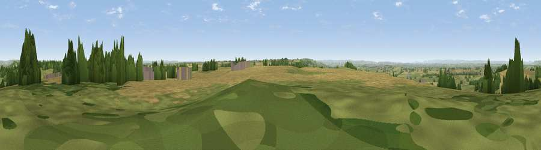

Viewpoint near Hinton
#8259 in England · top 9% of its area beats it · near HintonWhere it is
The exact computed spot (ST 75162 77625). Click the marker for map links.
The view, rendered

A 360° render of this exact spot computed from the terrain model, tree cover and land cover — summer colours, afternoon light, calibrated against photographs of famous viewpoints. Real trees, hedges and buildings will differ in detail.
The panorama
Grey silhouette: terrain skyline in each direction (720 bearings, Earth curvature and refraction included). Dashed green: skyline with trees (+15 m) and buildings (+8 m) as obstacles. Blue strip: how far the ground is visible on each bearing.
Where the view opens
Wedge length = distance to the farthest visible ground on that bearing (vegetation-aware). Rings at 10, 25 and 50 km.
What fills the view
49% cropland · 31% grassland · 17% woodland · 3% built-up
Angular shares of the visible panorama (visual magnitude), not map area. Landscape diversity 0.49 (0–1 Shannon).
Key numbers
More beautiful places nearby
The staircase of upgrades: each row has a higher view potential than everything closer. Driving times are estimates from straight-line distance, calibrated against real road routing — check an actual route before setting out.
| Place | Direction | Drive | Score |
|---|---|---|---|
| Viewpoint near Horton | NNE · 8 km | ~16 min | 66.9 |
| Hanging Hill | SSW · 8 km | ~17 min | 76.4 |
| Viewpoint near Stinchcombe | N · 20 km | ~35 min | 80.5 |
| Nottingham Hill | NNE · 56 km | ~77 min | 80.9 |
| Garway Hill | NW · 57 km | ~79 min | 84.6 |
| Millennium Hill | N · 62 km | ~85 min | 86.9 |
| Worcestershire Beacon | N · 68 km | ~91 min | 87.1 |
| Viewpoint near West Quantoxhead | WSW · 72 km | ~95 min | 87.9 |
51.49701, -2.35918 · source: screening · position refined by local search. Computed location — check access rights before visiting.